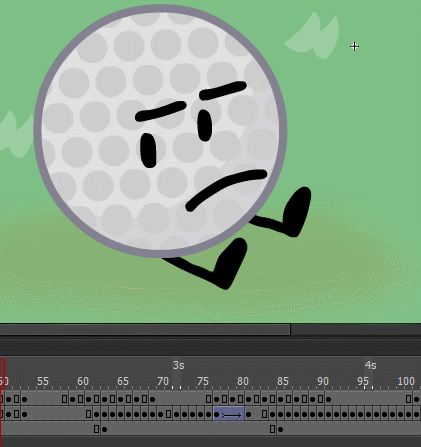

Welcome - Resources - Tools - The Cowboy Trick - Vanishing Point - Post Processing

Important Resources
Here are some important resources to help you with your journey!
1. PHLearn's 30-days of Photoshop

Start at the very beginning with a tour of Photoshop, then move into the basics like layers and common tools. Next they move into essential techniques like selections, masking and changing colors. On day 15 they begin goal-oriented tutorials – teaching you how to cut your subject out, retouching and more.
The AMAZING positive is that there is nothing to buy, subscribe, or pay for. 30 Days of Photoshop is completely free for everyone. There are also sample image downloads, a calendar to keep your schedule and an episode guide PDF in their website.
I highly recommend this for beginners and the many choices shown in their YouTube playlist. You can be familiarized with Photoshop, even in one single day if you want to rush through it.
2. Urasawa Naoki no Manben
Urasawa Naoki no Manben (Naoki Urasawa's Manga Exertions) is a TV Documentary airing on NHK Educational TV. It follows acclaimed mangaka Naoki Urasawa (creator of 20th Century Boys and Monster) as he sets out to break new ground for manga even further than he already has. In an attempt to educate viewers about manga and preserve the intricate craftsmanship and process of Japanese artists on video for future generations, he invites a manga artist to have their workplace filmed for a couple of days, so as to display them in the process of crafting chapters for their current serializations. The cameras are fixed and specifically placed so as to be as unobtrusive as possible, letting the artists work comfortably. After the footage has been shot, Urasawa meets with the artist and they discuss the footage, talking about the artist's workplace and workflow, the difficulties involved in the mangaka lifestyle, their reasons for drawing manga in the first place, and their perspective on the current industry and their own work.
This is SUPER useful as Photoshop can use all manga techniques used within the show as many digital illustrations can use in the program. You can view this series through the Japanese network NHK, Dailymotion reuploads, and YouTube for free. I have been following this series recently and I think this is good for anyone, either you make 2D or 3D digital illustrations. For anime fans, many popular manga artists do appear in this documentary such as Akira Toriyama and Junji Ito.
3. JacknJellify's Object Animator Toolbox
Learn the 2D animation techniques used in shows like Battle for Dream Island! PREREQUISITE: A basic level of Adobe Animate is expected, but it's possible to follow along regardless. Through this tutorial, you can still learn many tricks that can apply to Adobe Photoshop. From this tutorial, I learned how to tween and use it in gifs such as the one in the Table of Contents.
4. Google Nik Collection
Nik Collection 3 By DxO is the world’s most exciting and creative suite of photo plugins for Adobe Photoshop and Lightroom Classic. With a range of stunning visual effects and some brilliant new editing tools, Nik Collection 3 gives you total creative control over your photos. I use this program everyday in Adobe Photoshop because I think it is a good precursor on having to learn color grading and VERY good for post processing. The quality that this program can give is almost movie-level products, if not then it is.
Back to Top